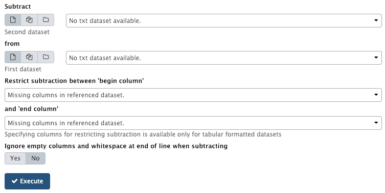

Sustracción de Datos

Contexto
Problema
El Usuario quiere quitar un conjunto de datos de otro conjunto de datos.
Solución
Permitir al usuario indicar dos conjuntos de datos (A y B), un atributo común entre ellos (p. ej. Id de variación), donde:
El usuario ejecuta la operación A-B y el resultado es un conjunto de datos que pertenecen a A, y no a B.
Adicionalmente, si los conjuntos de datos están en formato tabular, el usuario podría especificar la columna inicio y columna fin para condicionar la operación de sustracción haciendo que la operación se ejecute y presente el resultado considerando únicamente el rango de columnas .
Estructura
Ejemplos
El ejemplo de la portada es un e la UI de Galaxy[1]. El usuario selecciona los conjuntos de datos, primero el conjunto B y luego el conjunto A. Si los conjuntos de datos son tabulares, Galaxy permite al usuario indicar la columna de inicio y fin para acotar la operación y resultados de la substracción. La primera columna indicada es considerada por defecto como la columna común entre los dos conjuntos de datos. Siendo por ejemplo el presentado en [1]:
Si el Conjunto de datos A es:
chr1 4225 19670
chr10 6 8
chr1 24417 24420
chr6_hla_hap2 0 150
chr2 1 5
chr10 2 10
chr1 30 55
chrY 1 20
chr1 1225979 42287290
chr10 7 8
Y el conjunto B es:
chr1 4225 19670
chr10 6 8
chr1 24417 24420
chr6_hla_hap2 0 150
chr2 1 5
chr1 30 55
chrY 1 20
chr1 1225979 42287290
Entonces, la operación A-B (incluyendo todas las columnas) será:
A contrario, la operación B-A (incluyendo todas las columnas) será un conjunto de datos sin elementos (conjunto vacío).
La operación A-B restringiendo la operación a las columnas c1 and c2 será:
BIBLIOGRAFIA